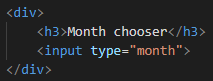
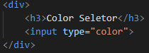
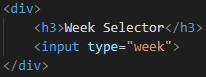
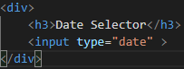
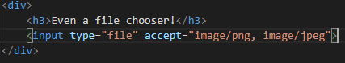

HTML is more powerful than I thought. This week I learned about the input tag and its type attribute. It turns out the the input tag along with the type attribute are very powerful! with HTML you can colect all sorts of inputs. Here is a classic example:
Screenshot:
wait, there are many more... are you familiar with any of this?
Screenshot:
Screenshot:
Screenshot:
Screenshot:
The accept attribute just specifies what file types are valid inputs.
and much more! Please visit W3schools and explore all the different types of inputs, I promise that it will be worth your time.
Though this might not be as cool for you, for me it is because I really believe that all of this examples Id given where done through a combination of CSS and Javascript or Bootstrap. I found out about this awesome HTML feature through W3schools.com.
This feature makes developers life easier. They can nicely collect the data and make something with it, like put it in a database. I definitly see myselft utilizing this HTML tag in the near future for projects and labs.